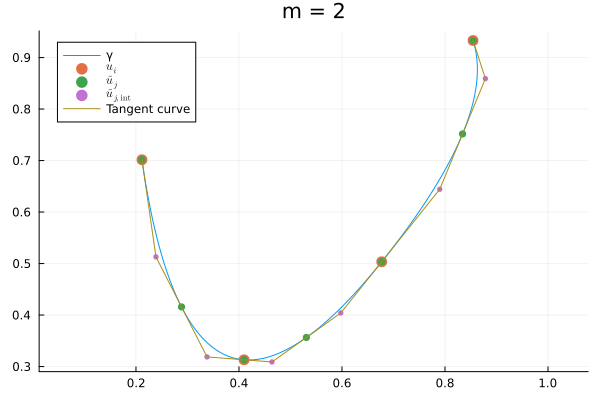
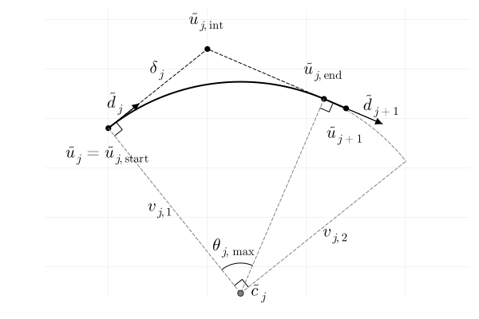
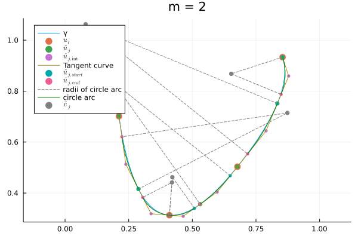
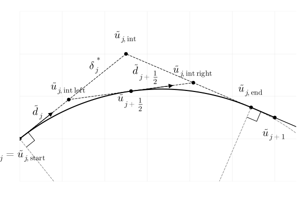

Smooth arc length interpolation
Arc length interpolation is interpolation between points using a curve that is parameterized by arc length. That is: the curve parameterization has unit speed everywhere, and so the parameter t at each point on the curve is equal to the total distance traveled from the beginning of the curve. In this context, by 'smooth' we mean that the curve is continuously differentiable.
Usage
DataInteprolations.jl offers an arc length interpolation method that approximates an existing non arc length interpolation by circle and line segments. This can be done by providing an interpolation object (the shape interpolation):
using DataInterpolations
using Plots
using Random
Random.seed!(2)
# Example from interpolation object
u = cumsum([rand(3) for _ in 1:10])
t = 1:10
A_shape = QuadraticSpline(u, t)
A = SmoothArcLengthInterpolation(A_shape; m = 10)
function plot_itp(itp)
t_eval = range(itp.t[1], itp.t[end]; length = 1000)
u_eval = zeros(3, 1000)
itp(u_eval, t_eval)
plot(eachrow(u_eval)...; label = "SmoothArcLengthInterpolation")
scatter!(eachrow(u_eval[:, 1:50:end])...; label = "Equidistant points on the curve")
scatter!(eachrow(hcat(A.shape_itp.u...))...; label = "Original data")
end
plot_itp(A)Here m determines how fine the approximation is. It is also possible to just provide the data points, optionally providing t and a preferred interpolation type which determines the shape of the curve.
using LinearAlgebra
# Example from only u
A = SmoothArcLengthInterpolation(hcat(u...))
@show typeof(A.shape_itp)
plot_itp(A)Docstrings
DataInterpolations.SmoothArcLengthInterpolation — Method SmoothArcLengthInterpolation(
u::AbstractMatrix{U};
t::Union{AbstractVector, Nothing} = nothing,
interpolation_type::Type{<:AbstractInterpolation} = QuadraticSpline,
kwargs...) where {U}Interpolate in a C¹ smooth way through the data with unit speed by approximating an interpolation (the shape interpolation) with line segments and circle segments.
Arguments
u: The data to be interpolated in matrix form; (ndim, ndata).
NOTE: With this method it is not possible to pass keyword arguments to the constructor of the shape interpolation. If you want to do this, construct the shape interpolation yourself and use the SmoothArcLengthInterpolation(shape_itp::AbstractInterpolation; kwargs...) method.
Keyword Arguments
t: The time points of the shape interpolation. By default given by the cumulative sum of the Euclidean distances between the pointsu.interpolation_type: The type of the shape interpolation. Defaults toQuadraticSpline. Note that for theSmoothArcLengthInterpolationto be C¹ smooth, theinterpolation_typemust be C¹ smooth as well.m: The number of points at which the shape interpolation is evaluated in each interval between time points. TheSmoothArcLengthInterpolationconverges to the shape interpolation (in shape) as m → ∞.extrapolation: The extrapolation type applied left and right of the data. Possible options areExtrapolationType.None(default),ExtrapolationType.Constant,ExtrapolationType.LinearExtrapolationType.Extension,ExtrapolationType.PeriodicandExtrapolationType.Reflective.extrapolation_left: The extrapolation type applied left of the data. Seeextrapolationfor the possible options. This keyword is ignored ifextrapolation != Extrapolation.none.extrapolation_right: The extrapolation type applied right of the data. Seeextrapolationfor the possible options. This keyword is ignored ifextrapolation != Extrapolation.none.assume_linear_t: boolean value to specify a faster index lookup behaviour for evenly-distributed abscissae. Alternatively, a numerical threshold may be specified for a test based on the normalized standard deviation of the difference with respect to the straight line (seelooks_linear). Defaults to 1e-2.
DataInterpolations.SmoothArcLengthInterpolation — Methodfunction SmoothArcLengthInterpolation(
shape_itp::AbstractInterpolation;
m::Integer = 2,
kwargs...)Approximate the shape_itp with a C¹ unit speed interpolation using line segments and circle segments.
Arguments
shape_itp: The interpolation to be approximated. Note that for theSmoothArcLengthInterpolationto be C¹ smooth, theshape_itpmust be C¹ smooth as well.
Keyword Arguments
m: The number of points at which the shape interpolation is evaluated in each interval between time points. TheSmoothArcLengthInterpolationconverges to the shape interpolation (in shape) as m → ∞.extrapolation: The extrapolation type applied left and right of the data. Possible options areExtrapolationType.None(default),ExtrapolationType.Constant,ExtrapolationType.LinearExtrapolationType.Extension,ExtrapolationType.PeriodicandExtrapolationType.Reflective.extrapolation_left: The extrapolation type applied left of the data. Seeextrapolationfor the possible options. This keyword is ignored ifextrapolation != Extrapolation.none.extrapolation_right: The extrapolation type applied right of the data. Seeextrapolationfor the possible options. This keyword is ignored ifextrapolation != Extrapolation.none.assume_linear_t: boolean value to specify a faster index lookup behaviour for evenly-distributed abscissae. Alternatively, a numerical threshold may be specified for a test based on the normalized standard deviation of the difference with respect to the straight line (seelooks_linear). Defaults to 1e-2.
DataInterpolations.SmoothArcLengthInterpolation — Methodfunction SmoothArcLengthInterpolation(
u::AbstractMatrix,
d::AbstractMatrix
[, make_intersections::Val{<:Bool}];
shape_itp::Union{AbstractInterpolation, Nothing} = nothing,
extrapolation::ExtrapolationType.T = ExtrapolationType.None,
extrapolation_left::ExtrapolationType.T = ExtrapolationType.None,
extrapolation_right::ExtrapolationType.T = ExtrapolationType.None,
cache_parameters::Bool = false,
assume_linear_t = 1e-2,
in_place::Bool = true)Make a C¹ smooth unit speed interpolation through the given data with the given tangents using line segments and circle segments.
Arguments
u: The data to be interpolated in matrix form; (ndim, ndata).d: The tangents to the curve in the pointsu.make_intersections: Whether additional (point, tangent) pairs have to be added in between the provided data to ensure that the consecutive (tangent) lines intersect. Defaults toVal(true).
Keyword Arguments
shape_itp: The interpolation that is being approximated, if one exists. Note that this interpolation is not being used; it is just passed along to keep track of where the shape of theSmoothArcLengthInterpolationoriginated.extrapolation: The extrapolation type applied left and right of the data. Possible options areExtrapolationType.None(default),ExtrapolationType.Constant,ExtrapolationType.LinearExtrapolationType.Extension,ExtrapolationType.PeriodicandExtrapolationType.Reflective.extrapolation_left: The extrapolation type applied left of the data. Seeextrapolationfor the possible options. This keyword is ignored ifextrapolation != Extrapolation.none.extrapolation_right: The extrapolation type applied right of the data. Seeextrapolationfor the possible options. This keyword is ignored ifextrapolation != Extrapolation.none.assume_linear_t: boolean value to specify a faster index lookup behaviour for evenly-distributed abscissae. Alternatively, a numerical threshold may be specified for a test based on the normalized standard deviation of the difference with respect to the straight line (seelooks_linear). Defaults to 1e-2.
Method derivation
Say we have an ordered set of points $u_1, \ldots, u_n \in \mathbb{R}^N$ and we want to make a lightweight $C^1$ smooth interpolation by arc-length $\tilde{\gamma}: [0,T] \rightarrow \mathbb{R}^N$ through these points. The first part is easy, just pick your favorite established interpolation method that achieves $C^1$ smoothness. The arc-length part however turns out to be quite nasty. Here I propose a method that is quite general and cheap to compute.
The 2-dimensional case
2 is the smallest number of dimensions in which the posed problem is non-trivial. Say we use an established (non arc-length) interpolation method for our set of points to obtain the $C^1$ curve
\[ \gamma : [0, T] \rightarrow \mathbb{R}^2\]
for which
\[ \gamma(t_i) = u_i \quad i = 1, \ldots, n,\]
given a suitable set of 'time' values
\[ 0 = t_1 < t_2 < \ldots < t_n = T,\]
for instance
\[ t_i = \sum_{k=1}^{i-1} \|u_{k+1} - u_k\|_2.\]
We now want to approximate $\gamma$ piecewise with sections that are trivially parameterizable by arc-length, namely line segments and circle segments. To do this, we fix some $m \in \mathbb{N}$ and define a refined set of time points $\left(\tilde{t}_j\right)_{j=1}^{m(n-1) + 1}$ given by
\[ \tilde{t}_{m(k-1) + l} = t_k + \frac{l}{m + 1}(t_{k+1} - t_k), \quad k = 1 \ldots n-1, \; l = 1, \ldots m.\]
In these refined time points we evaluate $\gamma$ and its normalized derivative:
\[ \tilde{u}_j = \gamma\left(\tilde{t}_j\right), \; \tilde{d}_j = \frac{\dot{\gamma}\left(\tilde{t}_j\right)}{\|\dot{\gamma}\left(\tilde{t}_j\right)\|_2}, \qquad j = 1, \ldots, m(n-1) + 1.\]
As a first step to create the interpolation by arc length $\tilde{\gamma}$, we make a piecewise linear curve which is tangent to $\gamma$ in $\tilde{u}_j$ for each line segment, where we denote the intersection of consecutive tangent lines by $\tilde{u}_{j, \text{int}}$:
\[ \begin{align*} \tilde{u}_{j, \text{int}} &=& \tilde{u}_j + \frac{\langle\tilde{u}_{j+1}-\tilde{u}_j, \tilde{d}_j\rangle - \langle\tilde{d}_j, \tilde{d}_{j+1}\rangle \langle\tilde{u}_{j+1}-\tilde{u}_j, \tilde{d}_{j+1}\rangle}{1 - \langle\tilde{d}_j, \tilde{d}_{j+1}\rangle^2}\tilde{d}_j \\ &=& \tilde{u}_{j+1} + \frac{\langle\tilde{d}_j, \tilde{d}_{j+1}\rangle\langle\tilde{u}_{j+1}-\tilde{u}_j, \tilde{d}_j\rangle - \langle\tilde{u}_{j+1}-\tilde{u}_j, \tilde{d}_{j+1}\rangle}{1 - \langle\tilde{d}_j, \tilde{d}_{j+1}\rangle^2}\tilde{d}_{j+1}. \end{align*}\]
As expected this doesn't work for $\langle\tilde{d}_j, \tilde{d}_{j+1}\rangle^2 = 1$, which means that the consecutive tangent lines are parallel. In fact, in the above equation we want the coefficient of $\tilde{d}_j$ to be positive and the coefficient of $\tilde{d}_{j+1}$ to be negative, to ensure that $\tilde{u}_{j, \text{int}}$ lies properly in between $\tilde{u}_j$ and $\tilde{u}_{j+1}$.
As a last step to obtain our curve by arc length $\tilde{\gamma}$ we want to get rid of the kinks in the tangent curve. We do this by replacing sections of the tangent curve by circle arcs. For each $\tilde{u}_{j, \text{int}}$ we compute the shortest distance to the neighboring evaluation points on $\gamma$:
\[ \delta_j = \min\left\{ \|\tilde{u}_j - \tilde{u}_{j, \text{int}}\|_2, \|\tilde{u}_{j + 1} - \tilde{u}_{j, \text{int}}\|_2 \right\}.\]
From this we compute 2 points that are on the tangent curve and equidistant from $\tilde{u}_{j + \frac{1}{2}}$:
\[ \tilde{u}_{j, \text{start}} = \tilde{u}_{j, \text{int}} - \delta_j \tilde{d}_j, \]
\[ \tilde{u}_{j, \text{end}} = \tilde{u}_{j, \text{int}} + \delta_j \tilde{d}_{j+1}.\]
Note that by this definition
\[ \tilde{u}_{j, \text{start}} = \tilde{u}_j \quad \vee \quad \tilde{u}_{j, \text{end}} = \tilde{u}_{j + 1}.\]
Now we can define a circle arc from $\tilde{u}_{j, \text{start}}$ to $\tilde{u}_{j, \text{end}}$ given the center
\[ c_j = \tilde{u}_{j, \text{int}} + \delta_j\frac{\tilde{d}_{j+1} - \tilde{d}_j}{1 - \langle\tilde{d}_j,\tilde{d}_{j+1}\rangle}\]
and radius
\[ R_j = \delta_j\sqrt{\frac{1 + \langle\tilde{d}_j,\tilde{d}_{j+1}\rangle}{1 - \langle\tilde{d}_j,\tilde{d}_{j+1}\rangle}}.\]
We obtain the circle arc
\[ c_j + \cos\left(\frac{t}{R_j}\right)v_{j, 1} + \sin\left(\frac{t}{R_j}\right)v_{j, 2}, \quad t \in [0, \Delta t_{j, \text{arc}}],\]
where
\[ v_{j, 1} = -\delta_j \frac{\tilde{d}_{j+1} - \langle\tilde{d}_j,\tilde{d}_{j+1}\rangle\tilde{d}_j}{1 - \langle\tilde{d}_j,\tilde{d}_{j+1}\rangle}, \quad v_{j, 2} = R_j \tilde{d}_j.\]
By this definition $\|v_{j, 1}\|_2 = \|v_{j, 2}\|_2 = R_j$ and $\langle v_{j, 1}, v_{j, 2}\rangle = 0$. Furthermore:
\[ \Delta t_{j, \text{arc}} = R_j\theta_{j, \;\max}= 2R_j \arctan\left(\frac{\delta_j}{R_j}\right).\]
That's pretty neat, but this method does not directly generalize to higher dimensional spaces. That is because in general the intersection points $\tilde{u}_{j, \text{int}}$ of the tangent lines do not exist.
The higher dimensional case
Let's try to generalize the method above. The goal is to find a point $\tilde{u}_{j + \frac{1}{2}}$ and unit direction $\tilde{d}_{j + \frac{1}{2}}$ to add to the tangent curve between $\tilde{u}_j$ and $\tilde{u}_{j+1}$ such that:
- the tangent line intersections $\tilde{u}_{j, \text{int left}}, \tilde{u}_{j, \text{int right}}$ exist. This means that the new line is fixed by these 2 points;
- constructing $\tilde{\gamma}$ including this point gives gives an identical result to constructing $\tilde{\gamma}$ excluding this point if the tangent line intersection already existed. The latter implies that $\tilde{u}_{j + \frac{1}{2}}$ and $\tilde{d}_{j + \frac{1}{2}}$ yield a tangent line to the constructed circle arc.
Let's assume the tangent line intersection exists, and we define
\[ \tilde{u}_{j, \text{int left}} = \tilde{u}_{j, \text{int}} - \delta_j^* \tilde{d}_{j},\]
\[ \tilde{u}_{j, \text{int right}} = \tilde{u}_{j, \text{int}} + \delta_j^* \tilde{d}_{j+1}.\]
It turns out that if we then let
\[\delta^*_j = \delta_j \frac{2 - \sqrt{2 + 2 \langle\tilde{d}_j, \tilde{d}_{j+1}\rangle}}{1 - \langle\tilde{d}_j, \tilde{d}_{j+1}\rangle},\]
The line between $\tilde{u}_{, \text{int left}}$ and $ \tilde{u}_{, \text{int right}}$ touches the circle arc as constructed before. It follows that
\[ \tilde{u}_{j + \frac{1}{2}} = \frac{1}{2}\left[\tilde{u}_{j, \text{int left}} + \tilde{u}_{j, \text{int right}}\right], \qquad \tilde{d}_{j + \frac{1}{2}} = \frac{\tilde{u}_{j, \text{int right}} - \tilde{u}_{j, \text{int left}}}{\|\tilde{u}_{j, \text{int right}} - \tilde{u}_{j, \text{int left}}\|_2}.\]
If we generalize the definition of $\tilde{u}_{j, \text{int}}$ then we can compute $\tilde{u}_{j + \frac{1}{2}}$ and $\tilde{d}_{j + \frac{1}{2}}$ as above. Something we can always compute are the points on the tangent lines which are closest together, given by:
\[ \argmin_{s,\; t \;\in\; \mathbb{R}} \|\tilde{u}_{j+1} + s\tilde{d}_{j+1} - (\tilde{u}_j + t\tilde{d}_j)\|_2.\]
This yields
\[ \tilde{u}_{j, \text{close left}} = \tilde{u}_j + \frac{\langle\tilde{u}_{j+1}-\tilde{u}_j, \tilde{d}_j\rangle - \langle\tilde{d}_j, \tilde{d}_{j+1}\rangle \langle\tilde{u}_{j+1}-\tilde{u}_j, \tilde{d}_{j+1}\rangle}{1 - \langle\tilde{d}_j, \tilde{d}_{j+1}\rangle^2}\tilde{d}_j,\]
\[ \tilde{u}_{j, \text{close right}} = \tilde{u}_{j+1} + \frac{\langle\tilde{d}_j, \tilde{d}_{j+1}\rangle\langle\tilde{u}_{j+1}-\tilde{u}_j, \tilde{d}_j\rangle - \langle\tilde{u}_{j+1}-\tilde{u}_j, \tilde{d}_{j+1}\rangle}{1 - \langle\tilde{d}_j, \tilde{d}_{j+1}\rangle^2}\tilde{d}_{j+1}.\]
This is the same as the two expressions for $\tilde{u}_{j, \text{int}}$ from before, except now these expressions aren't necessarily equal. We define $\tilde{u}_{j, \text{int}}$ as the average of these expressions:
\[ \tilde{u}_{j, \text{int}} = \frac{\tilde{u}_{j, \text{close left}} + \tilde{u}_{j, \text{close right}}}{2}.\]
From this $\delta_j$ and $\delta_j^*$ follow, and
\[ \tilde{u}_{j, \text{int left}} = \tilde{u}_{j, \text{close left}} - \delta_j^* \tilde{d}_{j},\]
\[ \tilde{u}_{j, \text{int right}} = \tilde{u}_{j, \text{close right}} + \delta_j^* \tilde{d}_{j+1}.\]